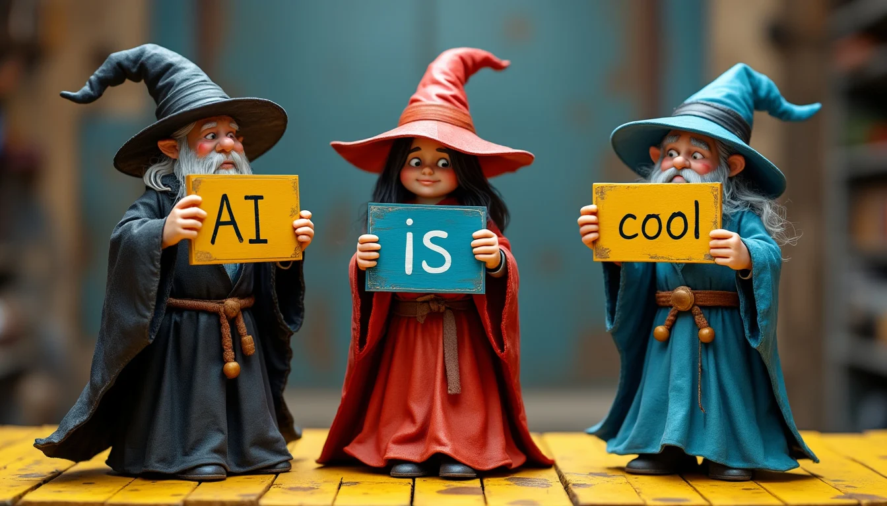

Versatile
Interactive
Creative
FLUX
More Than Just Flux 1
BasedLabs extends beyond FLUX.1,offering a range of AI-powered creative tools. Generate AI images,edit videos, and manipulate audio content on one platform. Our intuitive interface allows both beginners and professionals to create high-quality visual and audio projects efficiently. Whether for business or personal use, BasedLabs provides the resources to bring your ideas to life.
Enhanced Anatomical Accuracy
FLUX.1 takes a significant leap forward in rendering human features, particularly hands. While not flawless, it consistently produces more realistic and proportionate body parts compared to previous open-source models, elevating the quality of character-based images.


Enhanced Anatomical Accuracy
FLUX.1 takes a significant leap forward in rendering human features, particularly hands. While not flawless, it consistently produces more realistic and proportionate body parts compared to previous open-source models, elevating the quality of character-based images.
Enhanced Anatomical Accuracy
FLUX.1 takes a significant leap forward in rendering human features, particularly hands. While not flawless, it consistently produces more realistic and proportionate body parts compared to previous open-source models, elevating the quality of character-based images.
High-Resolution Image Generation
Flux AI excels at producing high-quality images with various aspect ratios, making it suitable for detailed and visually stunning creations.
Versatile Image Transformation
The platform supports a variety of image-to-image transformations, enabling users to alter existing images into new styles or variations, which is particularly useful for artistic and creative projects.
Multiple Model Options
Flux AI provides different models—[Dev], [Pro], and [Schnell]—each optimized for different tasks such as speed, quality, and versatility. This allows users to choose the model that best fits their specific needs.
Advanced Natural Language Processing
Beyond image generation, Flux AI also offers strong capabilities in text analysis, generation, and multimodal learning, which integrates text, images, and other data types for comprehensive analysis.

AI GERNATED
2023

decoration
2024